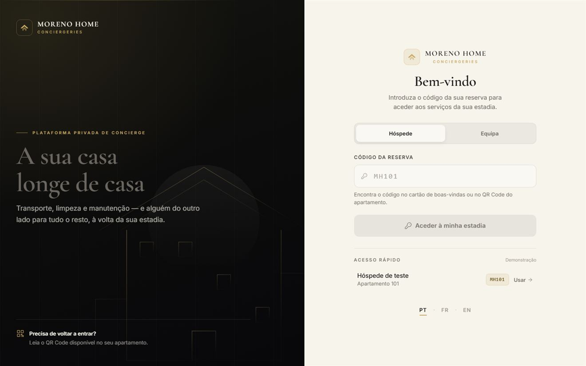

Projetos / Moreno Home
Moreno Home
Sistema web para atendimento digital de hóspedes em alojamento local, com painel de gestão para a equipa.

Resumo
O que é este projeto?
Uma aplicação web mobile-first, instalável como app, para um apartamento de arrendamento de curta duração. O hóspede lê o QR Code à entrada e encontra uma saudação e sete cartões: limpeza, compras, comida, manutenção, transporte, atividades e falar connosco.
Do outro lado existe um painel onde a equipa vê os pedidos a chegar, assume-os e conclui-os, com histórico pesquisável e gestão de quartos.
Problema
Qual o problema que precisava ser resolvido?
Um hóspede não instala uma aplicação para pedir toalhas. Também não quer aprender menus, criar conta, nem indicar em que quarto está — informação que o alojamento já tem.
E havia um problema mais sério por baixo: quando o pedido vive apenas numa conversa de WhatsApp, ele deixa de existir se ninguém ler a mensagem. Basta o hóspede fechar o separador, o navegador bloquear a janela ou o número estar mal configurado para o pedido desaparecer sem deixar rasto.
Solução
Como o sistema resolve esse problema?
O QR Code de cada quarto transporta o número do quarto no próprio endereço, por isso o hóspede nunca o escreve. Cada serviço é uma imagem, uma pergunta e uma escolha — fluxos de dois ou três passos, nunca mais. Não há catálogo de produtos nem de restaurantes: escrever uma frase é mais rápido do que procurar numa lista.
A parte decisiva é a ordem das operações na confirmação:
O pedido é persistido na base de dados antes de o WhatsApp abrir. Assim ele existe sempre, mesmo que a janela seja bloqueada — e nesse caso o ecrã de confirmação mostra um botão para abrir o WhatsApp manualmente. A referência é o que liga a conversa à linha do painel.
Meu papel
O que eu desenvolvi?
Único desenvolvedor do projeto. Arquitetura, interface do hóspede, painel da equipa, API, modelo de dados e publicação.
Um detalhe que resume a abordagem: a aplicação serve uma Content-Security-Policy com script-src 'self', o que impede carregar um gerador de QR Code a partir de um CDN. Em vez de abrir uma exceção na política de segurança ou introduzir um passo de build só para isso, escrevi o gerador de raiz — modo byte, correção de erros nível M, versões 1 a 10.
Principais funcionalidades
- Entrada por QR Code que já identifica o quarto, sem login nem formulário.
- Sete fluxos de pedido de dois a três passos: limpeza, compras, comida, manutenção, transporte, atividades e contacto direto.
- Pedido persistido antes do WhatsApp, com referência própria, para nenhum pedido se perder.
- Acompanhamento pelo hóspede com estado em destaque e linha do tempo dos passos.
- Painel em tempo real — pedidos novos aparecem sem recarregar a página, por Server-Sent Events.
- Histórico pesquisável por referência, quarto, hóspede, serviço ou responsável, com filtros de período e estado.
- Gestão de quartos com QR Code gerado no cliente, cartão para imprimir, download em PNG de alta resolução e link partilhável.
- Dois perfis de acesso — administração e equipa — com permissões distintas, recusadas também por acesso direto ao URL.
- Três idiomas: português, francês e inglês.
Resultado
A aplicação está em produção em moreno-home.pages.dev, servida pelo Cloudflare Pages com base de dados D1.
O modelo de dados foi desenhado para crescer: a estrutura Propriedade → Unidade → Reserva mantém-se com um único apartamento, e todos os pedidos guardam a propriedade e o apartamento a que pertencem. Acrescentar um segundo alojamento mais tarde não obriga a reconstruir nada.
O ecrã de entrada inclui um acesso de demonstração, por isso a aplicação pode ser experimentada por dentro sem credenciais reais.